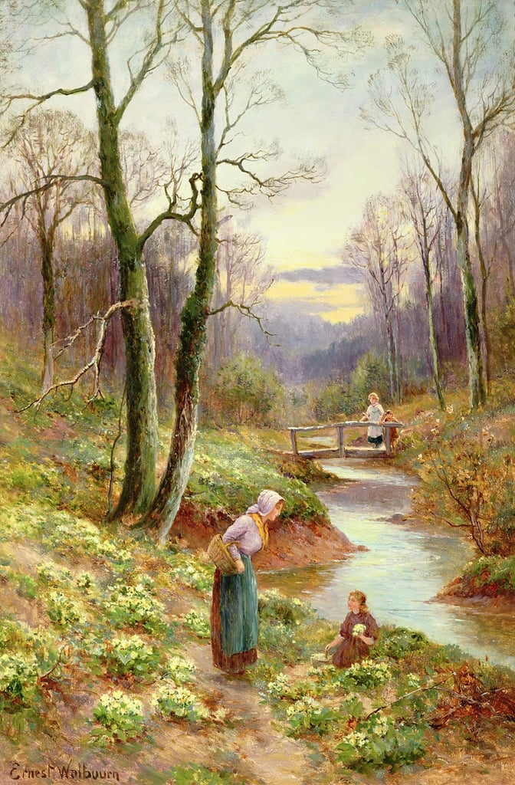
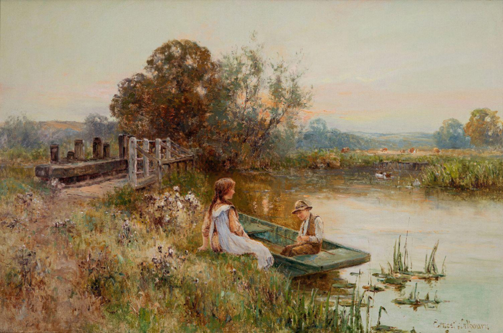

Ernest Walbourne (1872-1927) nổi tiếng với tranh phong cảnh phong cách lãng mạn.
Theo trang Meister Drucke, tác phẩm của ông đến nay vẫn được nhiều người yêu thích,
được trưng bày tại nhiều bảo tàng, triển lãm đồng thời thường xuyên xuất hiện tại các phiên đấu giá.
Trong ảnh là bức "Spring" của Ernest Walbourne.

Tác phẩm "One for baby". Phụ nữ, trẻ em xuất hiện nhiều trong tranh Ernest Walbourne.
Nàng thơ của họa sĩ là Eva Knight - vợ ông. Bà nhiều lần làm người mẫu cho chồng, có lúc vẽ nền cho họa sĩ.
"Picking primroses by the stream" (Hái hoa anh thảo bên suối). Hầu hết tác phẩm của Ernest Walbourne
mang màu sắc lãng mạn, nên thơ. Ông sinh ra trong gia đình giàu có, cha của Walbourne muốn con trai
làm kiến trúc sư, họa sĩ từng bỏ nhà đi vì bất đồng ý kiến với cha. Người cha sau đó nghe ý con,
cải tạo một nhà kho trong điền trang làm phòng tranh cho Ernest Walbourne.
"Picking flowers by the river" (Hái hoa bên sông).

Bức "Bringing home the sheep" (Đưa cừu về chuồng). Ông vẽ nhiều tác phẩm phụ nữ nông thôn chăm sóc
cừu, gà, vịt.

Tác phẩm "Feeding the ducks" (Cho vịt ăn) từng được hãng Christies đấu giá ở mức 14.900 bảng
năm 2007 (421 triệu đồng).

Tác phẩm "Peeling Potatoes" (Gọt vỏ khoai tây).

Ernest Walbourne đôi lần khắc họa nỗi buồn của phụ nữ, trong đó có tác phẩm "Heartbroken" -
nói về cô gái vụn vỡ trái tim vì thất tình.
Tranh "Faraway thoughts" miêu tả cô gái nhìn xa xăm.
Bức "Câu cá ở bờ kênh một ngày hè".